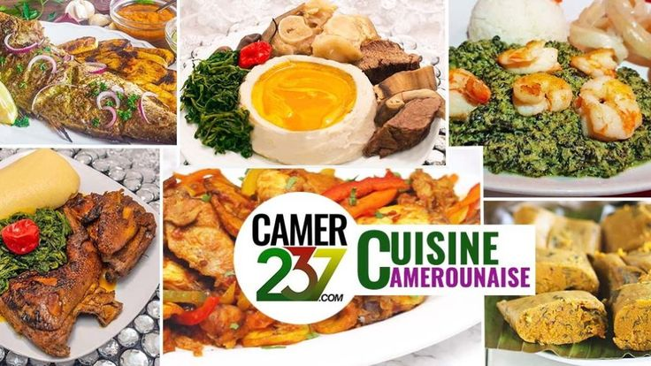
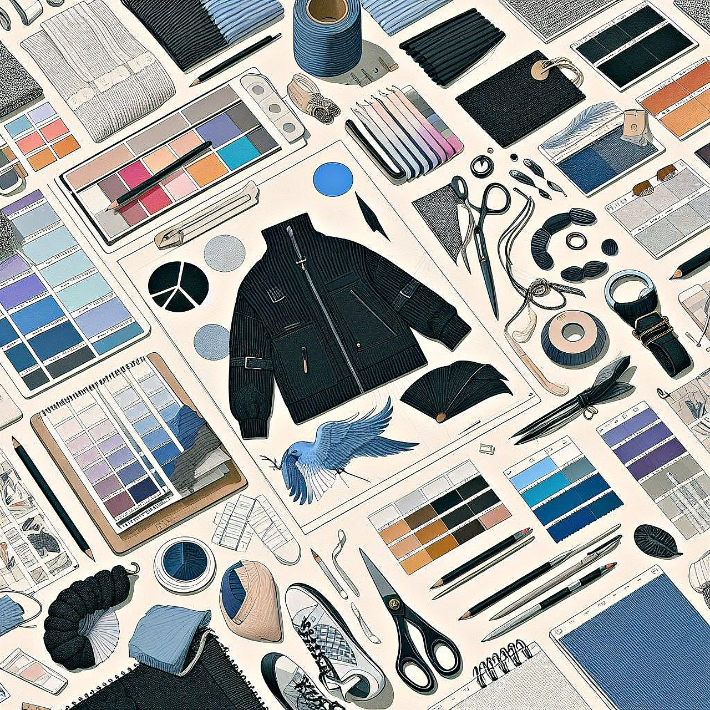
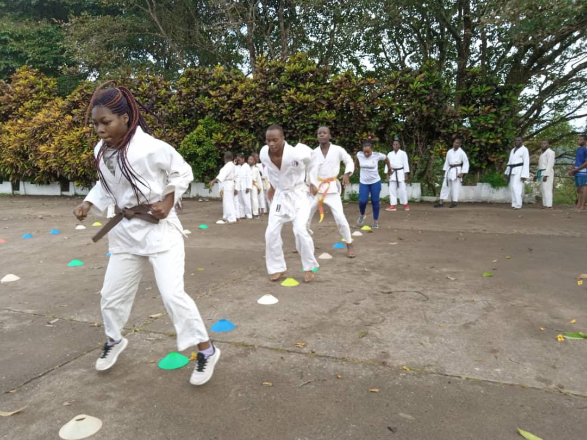

Mes passions
Manuela Kengmo, 25 Mai, 2024
Je trouve mon équilibre et mon bonheur dans une variété d'activités et de passions. Ces passe-temps et passions m'apportent un équilibre entre les études ou le travail, et me permettent de m'évader et de me ressourcer. Que ce soit en regardant un anime captivant, en cuisinant un plat délicieux, en pratiquant le karaté, en écoutant de la musique ou en explorant les tendances de la mode, chaque activité enrichit ma vie de manière unique. Voici un aperçu de ce qui me passionne
Les animes
J'aime regarder des animes, non seulement pour les intrigues captivantes et les personnages attachants, mais aussi pour l'art et la créativité qui s'y expriment. Favoris : Parmi mes animes préférés, on trouve Naruto, Attack on Titan, My Hero Academia, et One Piece. Communauté et J'aime aussi participer à des discussions en ligne sur les forums et les réseaux sociaux, partager des théories et des analyses, et rencontrer d'autres passionnés lors des conventions d'anime.

La Cuisine
La cuisine est pour moi une véritable forme d'expression artistique. J'aime essayer de nouvelles recettes, découvrir des cuisines du monde et revisiter des plats traditionnels. Cuisiner pour les Autres : Préparer des repas pour ma famille et mes amis est un grand plaisir. Voir leurs visages s'illuminer à chaque bouchée est une grande satisfaction. Expérimentation : J'aime expérimenter avec des ingrédients et des techniques, souvent en m'inspirant des cuisines japonaise, italienne, et camerounaise.

La Mode
La mode est une manière pour moi d'exprimer ma personnalité et mon humeur du jour. J'aime expérimenter avec différents styles, couleurs, et accessoires. Tendances et Créateurs : Suivre les dernières tendances et découvrir des créateurs émergents est une passion. J'apprécie particulièrement les défilés de mode et les magazines spécialisés. Design et Création : J'aime aussi dessiner des croquis de vêtements et imaginer des tenues. Un jour, j'espère pouvoir créer ma propre ligne de vêtements.

Le Karate
Je pratique le karaté depuis l'âge de 7 ans. J'ai participé à de nombreuses compétitions dans lesquelles j'ai remporté de nombreuses médailles. Je faisais partie d'une équipe de trois pour les compétitions de groupe. Je suis ceinture marron et je n'ai pas encore eu l'occasion de passer à la ceinture noire pour devenir maître de karaté.

Plus
lecture: Les livres offrent une évasion et permettent d'explorer des mondes imaginaires ou d'apprendre de nouvelles choses.
musique : je Joue de la flute et j'ecoute beaucoup de musique surtout chretiennes .